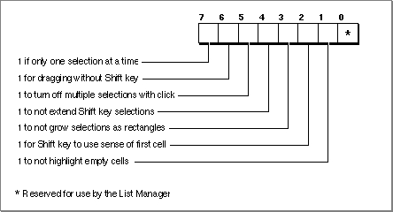

Legacy Document
Important: The information in this document is obsolete and should not be used for new development.
Important: The information in this document is obsolete and should not be used for new development.


Customizing Cell Highlighting
You can change theselFlagsfield of the list record to modify the algorithm the List Manager uses to select cells in response to a mouse click. "Selection of List Items" beginning on page 4-6 explains the different customizations you can make. Figure 4-18 illustrates the bits in theselFlagsfield. The List Manager defines constants for each flag:
CONST lOnlyOne = -128; {allow only 1 item to be selected at once} lExtendDrag = 64; {enable selection of multiple items } { by dragging without Shift} lNoDisjoint = 32; {prevent discontiguous selections } { using Command key} lNoExtend = 16; {deselect all items before } { responding to Shift-click} lNoRect = 8; {select all items in cursor's path } { during Shift-drag} lUseSense = 4; {allow user to use Shift key to } { deselect one or more items} lNoNilHilite= 2; {disable highlighting of empty cells}When you create a list, the List Manager clears all bits in theselFlagsfields. To change any of these defaults, set the appropriate bits in theselFlagsfield. For example, this code sets theselFlagsfield so that only one selection is allowed in a list:
myList^^.selFlags := lOnlyOne;Many of the constants are often used additively. For example, your application might allow the user to select a new range of cells simply by dragging over them, as shown in the following code:
myList^^.selFlags := lExtendDrag + lNoDisjoint + lNoExtend + lNoRect + lUseSense;ThelExtendDragconstant allows users to select a range of items simply by dragging the cursor. Ordinarily, if the user clicks one cell and drags the cursor to another,
only the last cell remains set.The
lNoDisjointconstant ensures that only one range of cells can be selected.The
lNoExtendconstant disables the List Manager feature that responds to a Shift-click by selecting all cells in the range of the newly clicked cell and the first (or last) selected cell. Instead, the List Manager simply deselects all cells in the range if this bit is set.To allow the user to select a number of cells simply by moving the cursor over them, you can set the bit corresponding to the
lNoRectconstant. This prevents the deselection of cells should the user drag the cursor first in one direction and then the other.You can set the bit corresponding to the
lUseSenseconstant so that if a user Shift-clicks a selected cell, the cell is deselected. Ordinarily, Shift-clicking a selected cell has no
effect.You might also wish to make the Shift key work just like the Command key in your application. You can accomplish that with the following code:
myList^^.selFlags := lNoRect + lNoExtend + lUseSense;ThelNoNilHiliteconstant is somewhat different from the others, in that it affects the display of a list, not the way that the List Manager selects items in response to a click. If the bit corresponding to this constant is set, then the List Manager does not select or highlight cells that do not contain any data.